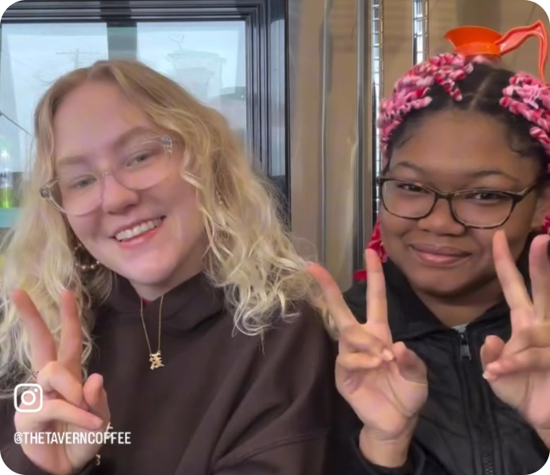
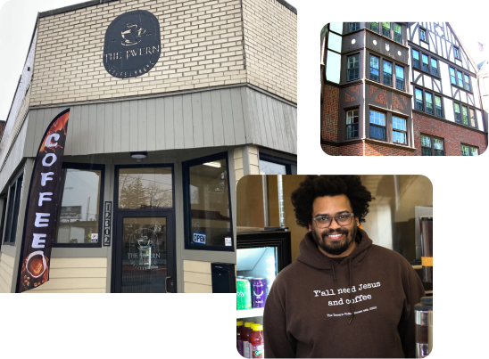

Locally-Owned Coffee Shop Serving Cleveland

Once a bar, now a beacon of ambition —The Tavern Coffee
House
is a unique
& ecclectic café revitalizing the Buckeye-
Shaker neighborhood through community, careers, and
coffee.

From bold brews to sweet sips, every drink at The Tavern is crafted with care and
community
in mind. Whether you’re grabbing your go-to latte or trying something
new like our signature Humble
Mornings Blend, or delicious pastries from Hunny
Bunny Bakery, there’s something on the menu to make
everyone feel at home.

The "Tavern's
Favorite" Signature
Latte
$5.00
Caffeine Level 100 mg
Our strong latte with any available
syrup. We got you.


Take a piece of The Tavern home with you. Every 12oz
bag of our signature roast fuels more
than your morning
— it powers job training, mentorship, and hope right here
in Buckeye.
Brew boldly. Give generously.
12 oz bag • 17-21 Servings !
Every pastry we serve is handcrafted by Hunny Bunny Bakery, a local
gem we’re proud to
support. It’s a sweet partnership that supports local
business and builds up Buckeye—one bite at a
time. It’s more than a treat
—it’s a taste of Buckeye’s small business spirit, made fresh just for you.


Committed to Reinvesting in Community
Behind the counter, there’s more than just coffee brewing.
Our one-year youth job training
program equips young
adults in the Buckeye-Shaker neighborhood with the tools
to thrive—on the
job and in life. From learning customer
service and leadership to building confidence and
purpose, every shift is a step toward something bigger
We’re brewing more than coffee—we’re
brewing brb
confidence, purpose, and life skills..
Baked Goods, Pastries, & Sandwiches
Featured Special
The Tavern Coffee House is a nonprofit café where
strong coffee fuels second chances. We’re
creating jobs,
building community, and serving hope daily in the heart
of Buckeye.

Uncategorized
The Tavern Coffee House For many of us, coffee is more than a beverage—
it’s a ritual, a comfort, and
sometimes the spark that gets our day
moving. From the aroma that greets us in the morning to the
conversations it inspires in cozy cafés, coffee has a way of bringing...
THE DRIP
Coffee Culture, Coffee Shop Life
Ever wonder what your coffee choice says about your vibe? Whether
you’re a bold Cold Brew boss or a
cozy Cappuccino dreamer, your
favorite drink might be spilling your secrets. Let’s decode your go-to
order
—just for fun.
THE DRIP